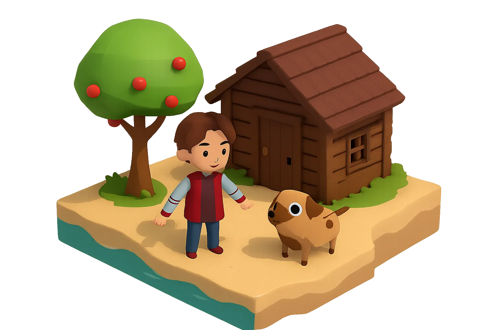
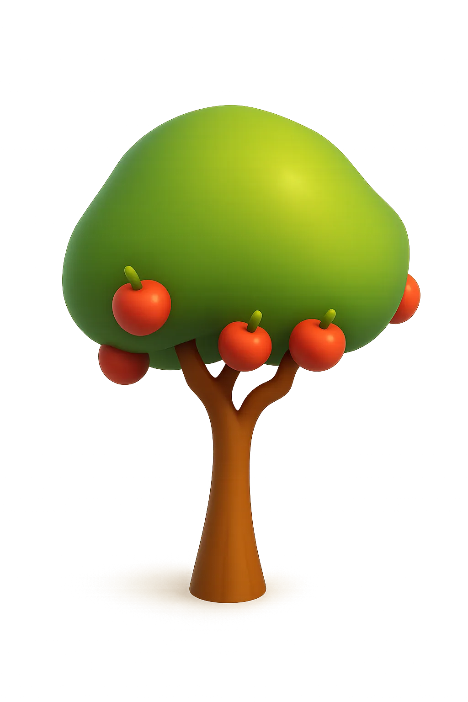
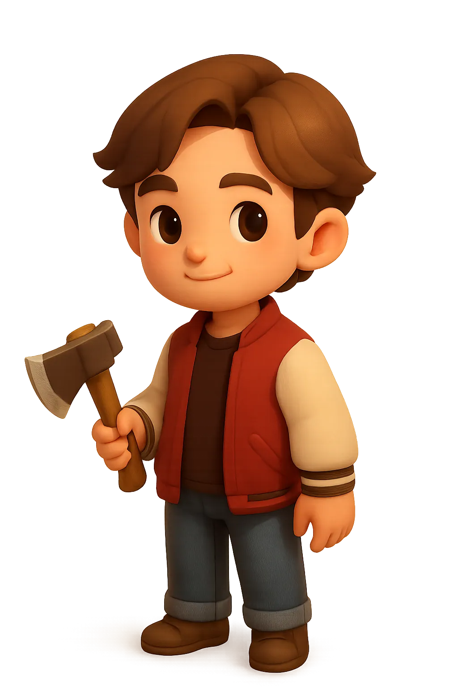
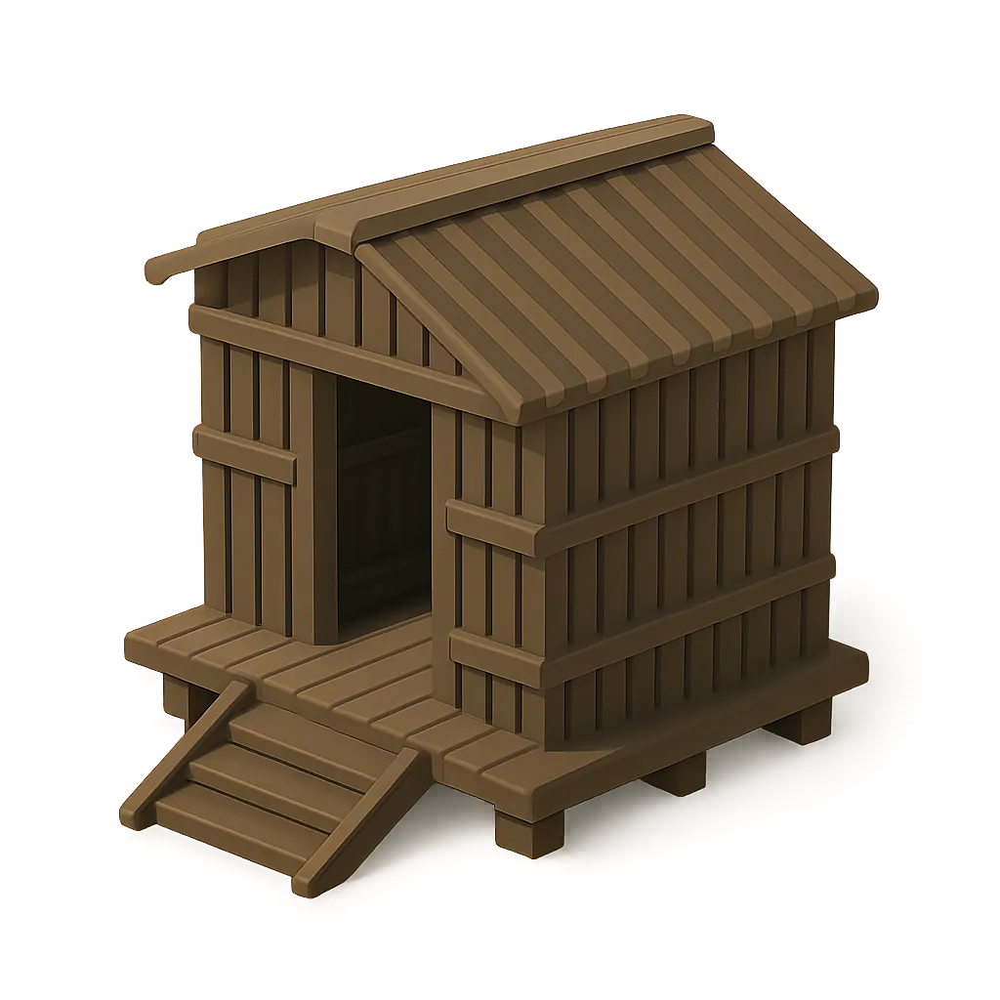
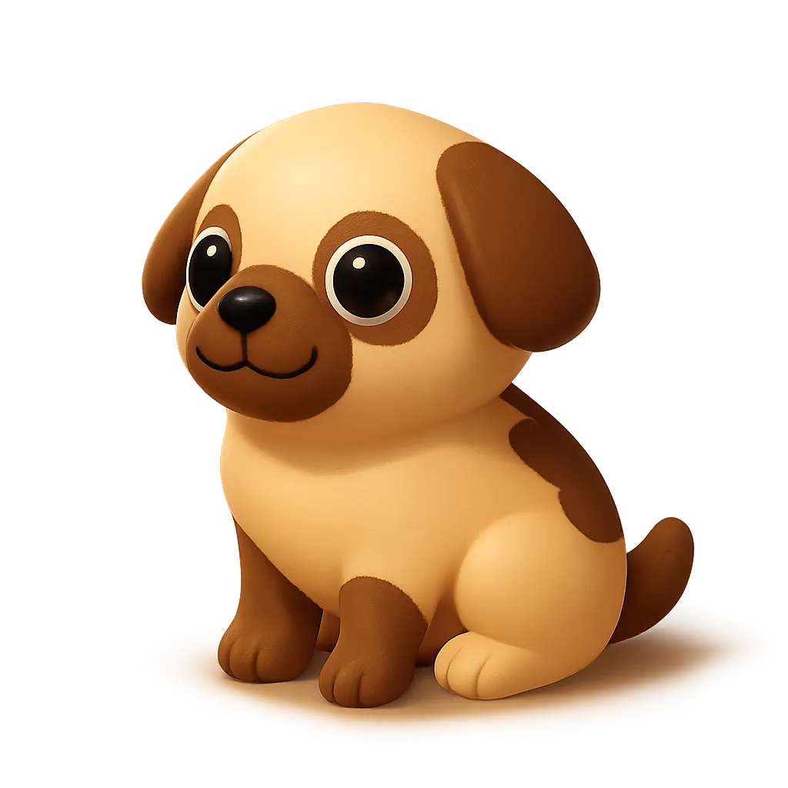

isla 01 · cozy
Tu isla.
A tu ritmo.
Cozy Adventure es un juego tranquilo de supervivencia y construcción que corre en el navegador. Desembarcas en una isla que es tuya: talas árboles, recoges manzanas, cultivas y levantas tu refugio encajando piezas en una rejilla. Sin prisa y sin reloj. Es un prototipo, hay poco y es pronto, pero ya se juega.
ISLA persistente· se guarda sola· jugable ya

qué es
Una isla que es tuya y se queda.
No hay misiones que tachar ni una barra que vigilar. Hay una isla, y tú decides qué hacer con ella: despejar un claro, plantar, o construir hasta que tenga la forma que te guste. El mundo se guarda solo, así que cada vez que vuelves sigue donde lo dejaste. Tranquilo de verdad, no tranquilo de mentira con cuenta atrás.
- Talar, recolectar y cultivar
- Construir por piezas en una rejilla
- Inventario y barra rápida
- Un perro que te sigue
el mundo
Madera, manzanas y un huerto.
La isla da lo justo para empezar. Los árboles caen a hachazos y sueltan madera; los manzanos te dan de comer; el huerto crece a su tiempo. Todo lo que recoges va a tu inventario y de ahí a tu construcción. Lo de siempre en un cozy, hecho para que apetezca repetirlo.




compañero
No estás sola en la isla.
Un perro te acompaña por el mundo. Te sigue mientras exploras y construyes, y hace la isla un poco menos isla. Pequeño detalle, gran diferencia: una compañía que no pide nada a cambio.
la firma · construir
Encaja la pieza en la rejilla.
Construir es el gesto central del juego. Entras en modo construcción, eliges una pieza (muro, suelo, rampa) y aparece como fantasma sobre la isla. Se ajusta sola a la rejilla: la giras, la colocas y queda donde toca, casilla a casilla. Sin medir, sin pelearte con el ratón. Lo de abajo es la idea, dibujada.
controles
Lo justo para moverte.
Andar con WASD, correr con Shift, la cámara con el ratón. Para construir, las cuatro teclas de arriba. No hay más que aprender.
- WASDMoverteo flechas
- ShiftCorrermantener
- EspacioSaltarapoyado
- RatónCámaratercera persona
empieza
Desembarca y haz tu isla.
Corre en el navegador, se guarda sola, no pide nada. Dale unas vueltas, planta un huerto, levanta una cabaña. Es un prototipo y va creciendo: el siguiente paso es jugar la misma isla en co-op. El desarrollo es abierto.